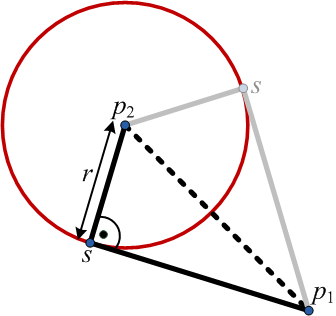
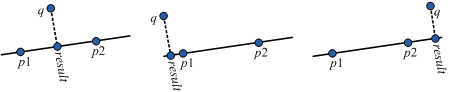
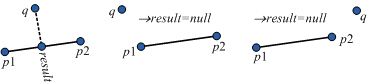
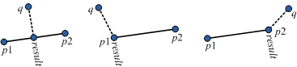
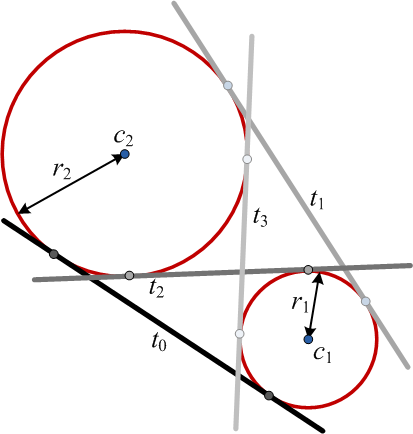
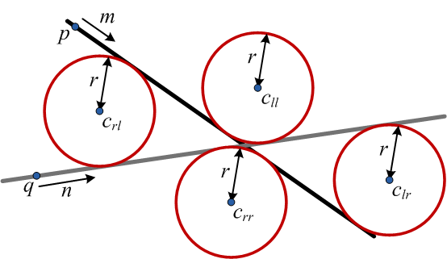
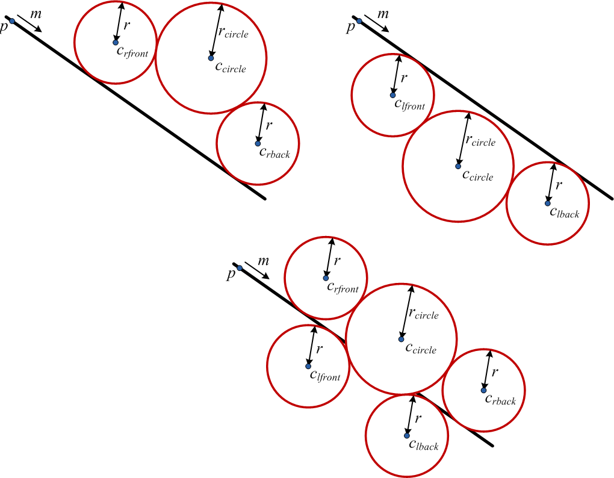
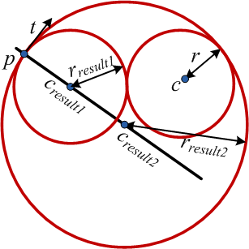
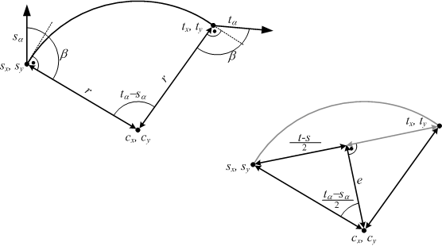
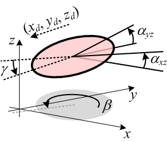

public class Geom
extends java.lang.Object
- Author:
- Jörg Roth (Joerg.Roth@Wireless-earth.org)
-
Method Summary
Modifier and Type Method Description static booleanaboveTriangle3D(double[] p1, double[] p2, double[] p3, double[] point)Decide whether a given point is above a 3D triangle.static intaboveTriangle3D(double[] p1, double[] p2, double[] p3, double[] point, double epsilon)Decide whether a given point is above, below or on a 3D triangle.static doubleabsDiffRadians(double a1, double a2)Same asdiffRadians(double,double), but takes the absolute value of angle difference.static double[]abTriangle2D(double[] p1, double[] p2, double[] p3, double[] point)Compute for a triangle with point p1, p2, p3 and a given point p, the relations a, b where
p=a·(p2-p1)+b·(p3-p1).
This method does not check, if a point is inside the triangle, i.e. a≥0, b≥0, a+b≤1.static double[]abTriangle2Dprecomp(double[] precomp, double[] point)Compute for a triangle with point p1, p2, p3 and a given point p, the relations a, b where
p=a·(p2-p1)+b·(p3-p1).
This method does not check, if a point is inside the triangle, i.e. a≥0, b≥0, a+b≤1.static double[][]angXYangXZtoMapPositions(double[] a, double[] b)Compute the rotation XY (yaw) and XZ (pitch) to map two positions, when the ordering is first in the x-y plane then in the x-z plane In particular, the rotation YZ (roll) must be 0.static double[][]angXYangXZtoMapPositionsReverse(double[] a, double[] b)Compute the rotation XY (yaw) and XZ (pitch) to map two positions, when the ordering is first in the x-z plane then in the x-y plane (note, this is reverse toangXYangXZtoMapPositions(double[],double[]).static double[]arcBetweenPoses(double sx, double sy, double sang, double tx, double ty, double tang)Compute an arc (center, rad) from two poses (start, targe).static doubleareaSize2D(double[][] polygon)Compute the area size of the ground projected polygon.static doubleareaSize2Dsigned(double[][] polygon)Compute the area size of the ground projected polygon.static double[]bisectings(double a1, double a2)Computes the bisectings between two angles, i.e. the angles with the same difference to both angles.static double[]circleCenterFromThreePoints(double x1, double y1, double x2, double y2, double x3, double y3)Computes a circle center by three points that reside on this circle.static double[][]circleForTangentPointAndCircle(double cx, double cy, double r, double px, double py, double tx, double ty)Given a circle with center c and radius r; further a point p and tangent vector t.static double[][]circlesForTangentAndCircle(double px, double py, double mx, double my, double cxcircle, double cycircle, double rcircle, double r)Given a straight line p+i·m and circle cxcircle, cycircle with radius rcircle, further a radius r for result circles.static double[][]circlesForTwoTangents(double px, double py, double mx, double my, double qx, double qy, double nx, double ny, double r)Given two straight lines p+i·m and q+j·n and radius r.static double[][]convexHull2D(double[][] points)Compute a convex hull of 2D points using Andrew's monotone chain convex hull algorithm.static double[][]createConvexPolygon(java.util.ArrayList<double[]> points, int dimension1, int dimension2)Create a convex polygon from a list of unsorted points (that belong to a convex polygon).
Important: this method does not execute a convex-hull approach to remove 'inner' points.
The approach requires the definition of two dimensions.static double[][]createRightangledTriangle(double p1x, double p1y, double p2x, double p2y, double r)Create a right-angled triangle with some conditions: Two of the three points, namely p1, p2 are given. The third point s should be computed. The distance between s and p2 is given as r>0. The right angle is in s, i.e. between the edges p1 - s and p2 - s. For r>0 we get zero or two points s that fulfill these conditions.
We can have another view on the problem.static double[]cutHorizontalSweepLine(double px, double py, double qx, double qy, double nx, double ny)Computes the intersection of the horizontal sweep line p+i·(1,0) and straight line q+j·n.static double[]cutLines(double px, double py, double mx, double my, double qx, double qy, double nx, double ny)Computes the intersection of two straight lines p+i·m and q+j·n.static double[]cutLineSegments(double p1x, double p1y, double p2x, double p2y, double q1x, double q1y, double q2x, double q2y)Computes the intersection of two line segments (p1,p2) and (q1,q2).static doublediffRadians(double a1, double a2)Computes the (signed) difference a1-a2 of two angles a1, a2.static java.util.ArrayList<double[]>douglasPeucker(double[][] points, double epsilon)Performs the Douglas Peucker line simplifyer.static java.util.ArrayList<double[]>douglasPeucker(double[][] points, int fromIndex, int toIndex, double epsilon)Performs the Douglas Peucker line simplifyer for a sub list of points.static double[]getMBC(double[][] points)Get the minimal bounding cubic of all points in the list.static double[]getMBC(java.util.ArrayList<double[]> points)Get the minimal bounding cubic of all points in the list.static double[]getMBR(double[][] points)Get the minimal bounding rect of all points in the list.static double[]getMBR(java.util.ArrayList<double[]> points)Get the minimal bounding rect of all points in the list.static double[][]getPlane(double[][] points)Compute the plane of a 3D polygon.static double[]getRotoTranslation2D(java.util.ArrayList<double[]> points1, java.util.ArrayList<double[]> points2)Computes the roto-translation that best converts points (2D) of the first list (points1) to points of the second (points2).static double[]getRotoTranslation2D(java.util.ArrayList<double[]> points1, java.util.ArrayList<double[]> points2, java.util.ArrayList<java.lang.Double> weights)Computes the roto-translation that best converts points (2D) of the first list (points1) to points of the second (points2).static double[]getRotoTranslation3D(java.util.ArrayList<double[]> points1, java.util.ArrayList<double[]> points2)Computes the roto-translation that best converts points (3D) of the first list (points1) to points of the second (points2).static double[]getRotoTranslation3D(java.util.ArrayList<double[]> points1, java.util.ArrayList<double[]> points2, java.util.ArrayList<java.lang.Double> weights)Computes the roto-translation that best converts points (3D) of the first list (points1) to points of the second (points2).static double[]getRotoTranslation3DignoreZ(java.util.ArrayList<double[]> points1, java.util.ArrayList<double[]> points2)Computes the 3D roto-translation that best converts points (2D) of the first list (points1) to points of the second (points2).static double[]getRotoTranslation3DignoreZ(java.util.ArrayList<double[]> points1, java.util.ArrayList<double[]> points2, java.util.ArrayList<java.lang.Double> weights)Computes the 3D roto-translation that best converts points (2D) of the first list (points1) to points of the second (points2).static RotoTranslationgetRotoTranslationObj2D(java.util.ArrayList<double[]> points1, java.util.ArrayList<double[]> points2)Computes the roto-translation that best converts points of the first list (points1) to points of the second (points2).static RotoTranslationgetRotoTranslationObj2D(java.util.ArrayList<double[]> points1, java.util.ArrayList<double[]> points2, java.util.ArrayList<java.lang.Double> weights)Computes the roto-translation that best converts points of the first list (points1) to points of the second (points2).static RotoTranslationgetRotoTranslationObj3D(java.util.ArrayList<double[]> points1, java.util.ArrayList<double[]> points2)Computes the roto-translation that best converts points (3D) of the first list (points1) to points of the second (points2).static RotoTranslationgetRotoTranslationObj3D(java.util.ArrayList<double[]> points1, java.util.ArrayList<double[]> points2, java.util.ArrayList<java.lang.Double> weights)Computes the roto-translation that best converts points (3D) of the first list (points1) to points of the second (points2).static RotoTranslationgetRotoTranslationObj3DignoreZ(java.util.ArrayList<double[]> points1, java.util.ArrayList<double[]> points2)Computes the 3D roto-translation that best converts points (2D) of the first list (points1) to points of the second (points2).static RotoTranslationgetRotoTranslationObj3DignoreZ(java.util.ArrayList<double[]> points1, java.util.ArrayList<double[]> points2, java.util.ArrayList<java.lang.Double> weights)Computes the 3D roto-translation that best converts points (2D) of the first list (points1) to points of the second (points2).static booleaninsidePolygon2D(double[][] polygon, double[] point)Decide whether the given point is inside the 2D polygon.static booleaninsidePolygon2D(double[][] polygon, double[] point, int dimension1, int dimension2)Decide whether the given point is inside the 2D polygon.static booleaninsidePolygon3D(double[][] polygon, double[][] plane, double[] point)Decide whether a given point is inside a 3D polygon.static booleaninsideTriangle2D(double[] p1, double[] p2, double[] p3, double[] point)Decide whether a given point is inside a 2D triangle.static booleaninsideTriangle2Dprecomp(double[] precomp, double[] point)Decide whether a given point is inside a 2D triangle.static booleaninsideTriangle3D(double[] p1, double[] p2, double[] p3, double[] point)Decide whether a given point is inside a 3D triangle.static double[][]intersectCircleSphere(double[] cc, double[] nc, double rc, double[] cs, double rs)Intersect a 3D circle with a sphere.static double[][]intersectConvexPolygonPlane(double[] planePoint, double[] planeNormal, double[][] points)Compute the intersection of a plane and a convex 3D polygon.
Note: If the polygon is not convex, still a single intersection line segment is computed, even though the actual intersection would be multiple line segments.
Further note: It will not be checked, if the 3D polygon is in a plane.static double[][]intersectConvexPolygons2D(double[][] points1, double[][] points2)Compute the intersection polygon from two convex 2D polygons.static double[][]intersectConvexPolygons2D(double[][] points1, double[][] points2, int dimension1, int dimension2)Compute the intersection polygon from two convex 2D polygons.
The caller can decide the coordinates that should be taken into account.
Note: It will not checked, if the input polygons are really convex.static double[]intersectionRatioLineCircle(double cx, double cy, double r, double px, double py, double dx, double dy)Intersects an infinite line with a circle.static double[]intersectionRatioLineSphere(double cx, double cy, double cz, double r, double px, double py, double pz, double dx, double dy, double dz)Intersects an infinite line with a sphere.static double[][]intersectLineCircle(double cx, double cy, double rad, double p1x, double p1y, double p2x, double p2y)Intersects an infinite line with a circle.static double[][]intersectLinePlane(double[] planePoint, double[] planeNormal, double[] linePoint, double[] lineDirection)Compute the intersection of line and plane (formula).static double[][]intersectSpherePlane(double[] sphereCenter, double sphereRad, double[] planePoint, double[] planeNormal)Intersect a sphere with a plane.static double[][]intersectThreeSpheres(double[] p1, double rad1, double[] p2, double rad2, double[] p3, double rad3)Intersect three spheres.static double[][]intersectTwoCircles(double x1, double y1, double r1, double x2, double y2, double r2)Intersects two circles.static double[][]intersectTwoConvexPolygons3DdifferentPlanes(double[][] points1, double[][] plane1, double[][] points2, double[][] plane2)Compute the intersection two convex 3D polygons.
Note: If the polygon are not convex, still a single intersection line segment is computed, even though the actual intersection would be multiple line segments.
Further note: It will not be checked, if the 3D polygons are in their planes.static double[][]intersectTwoConvexPolygons3DsamePlane(double[][] points1, double[][] points2, double[][] plane)Compute the intersection polygon from two 3D convex polygons.static double[]intersectTwoSpheres(double[] p1, double rad1, double[] p2, double rad2)Intersect two spheres.static booleanisConvex(double[][] polygon)Decide whether the ground projected polygon is convex.static double[]joinMBRs(double[] mbr1, double[] mbr2)Computes two bounding rects to a new bounding rect; also may take null bounding rects.static double[]maxDescent(double tiltAngleXZ, double tiltAngleYZ)Compute the direction of maximum descent from the two tilt (Euler) angles.static doubleminRadiansBetweenLines(double a1, double a2)Return the (absolute) smallest angle difference between two lines, given bei their line angles.static int[]mostDistant(double[][] points)Computes the pair of most distance points according toMatrix.distance(double[],double[]).static int[]mostDistant(java.util.ArrayList<double[]> points)Computes the pair of most distance points according toMatrix.distance(double[],double[]).static double[][]nearestPlanePoint(double[] planePoint, double[] planeNormal, double[] point)Compute the nearest point of the plane to a point.static double[][]nearestPlanePoint(double[] p1, double[] p2, double[] p3, double[] point)Compute the nearest point of the plane to a point.static double[]nearestPolygonPoint3D(double[][] polygon, double[][] plane, double[] point)Compute to a given point the nearest point 3D that belongs to the convex polygon or its area.static double[]nearestToCircle3D(double[] circleCenter, double[] circleNormal, double circleRad, double[] point)Compute the nearest point of a 3D circle (circumfence, not the inner area) to a given point.static double[]nearestToLineSegment(double p1x, double p1y, double p2x, double p2y, double qx, double qy)Computes the nearest point of a line segment (p1, p2) to another point q.static double[]nearestToLineSegment3D(double p1x, double p1y, double p1z, double p2x, double p2y, double p2z, double qx, double qy, double qz)Computes the nearest point of a line segment (p1, p2) to another point q in 3D.static intonWhichSide(double p1x, double p1y, double p2x, double p2y, double qx, double qy)Decide if q is on the left side, right side of the straight line that goes through (p1, p2), or if it is nearly on the (infinite) straight line.static double[][]orderClocksense(double[][] polygon, boolean counterClockwise)Order a 2D polygon according the given ordering sense.static double[]precomputeInsideTriangle2D(double[] p1, double[] p2, double[] p3)Precompute the check, whether a given point is inside a 2D triangle.static double[]precomputeTriangle2Dscanline(double[] p1, double[] p2, double[] p3)Precompute the computaton of triangle scanlines.static double[]project3Dto3D(double[] point, double[] zero, double[] xAxis, double[] yAxis, double[] zAxis, boolean checkAxis)Given a point in a our 'normal' (xzy) coordinate system.static double[]project3Dto3Dinv(double[] point, double[] zero, double[] xAxis, double[] yAxis, double[] zAxis, boolean checkAxis)Given a point p' in coordinates according (zero,xAxis,yAxis,zAxis), what are the coordinates in our 'normal' (xzy) coordinate system?static double[]projectOnLine(double px, double py, double mx, double my, double qx, double qy)Computes the rectangular projection of q on the straight line p+i·m.static double[]projectOnLine3D(double[] p, double[] m, double[] q)Computes the rectangular projection in 3D of q on the straight line p+i·m.static double[]projectOnLine3D(double px, double py, double pz, double mx, double my, double mz, double qx, double qy, double qz)Computes the rectangular projection in 3D of q on the straight line p+i·m.static double[]projectOnLineSegment(double p1x, double p1y, double p2x, double p2y, double qx, double qy)Computes the rectangular projection of q on a line segment (p1, p2).static double[][]projectOnPolygonPoint3D(double[][] polygon, double[][] plane, double[] point)Project a point to a 3D polygon, whereas the projection direction is the polygon's normal.static double[]projectPoint3Dto2D(double[] point, int dimension1, int dimension2)Copy two dimensions from a point.static double[][]projectPoints3Dto2D(double[][] points, int dimension1, int dimension2)Copy two dimensions from a list of points.static voidreduceDensityAngles(DoubleArrayList angles, double removeDiff)Reduce the density of an unordered list of angles.static doublereduceRadians(double angle)Maps an angle in the range of -5·π...+5·π in the range ±π.static double[]relativePose(double fromX, double fromY, double fromAngle, double toX, double toY, double toAngle)Compute the relative pose between two poses.static double[][]tangentsForTwoCircles(double x1, double y1, double r1, double x2, double y2, double r2)Compute the up to 4 tangent for two circles.static double[]triangle2Dscanline(double[] p1, double[] p2, double[] p3, double y)Get the scanline minX...maxX that covers a triangle at a given y.static double[]triangle2DscanlinePrecomp(double[] precomp, double y)Get the scanline minX...maxX that covers a triangle at a given y.
-
Method Details
-
intersectLinePlane
public static double[][] intersectLinePlane(double[] planePoint, double[] planeNormal, double[] linePoint, double[] lineDirection)Compute the intersection of line and plane (formula). The plane is given by a plane point and normal vector. The line is given by line point and direction vector.- Parameters:
planePoint- one point of the planeplaneNormal- the normal vector of the planelinePoint- one point of the linelineDirection- the direction of the line- Returns:
- intersection array of 2 with [0]: point as array, [1][0] multiplier of the line direction vector to get from the line point to the intersection point; null, line and plane are parallel
-
intersectTwoConvexPolygons3DsamePlane
public static double[][] intersectTwoConvexPolygons3DsamePlane(double[][] points1, double[][] points2, double[][] plane)Compute the intersection polygon from two 3D convex polygons. The 3D polygons must reside in the same plane. Also the intersection is projected into this plane. Note: It will not checked, if the input polygons are really convex. If not, the result ist not correct.
Further note: The operation is performed on a 2D projection. If the input polygons are not in the same plane, the result polygon either is.- Parameters:
points1- first polygonpoints2- second polygonplane- plane of the polygons as computed bygetPlane(double[][]), may be null, then this method computes the plane on its own- Returns:
- result (convex) intersection polygon or null for no intersection. Note, if the intersection is a point or line, also null will be returned.
-
insidePolygon3D
public static boolean insidePolygon3D(double[][] polygon, double[][] plane, double[] point)Decide whether a given point is inside a 3D polygon. Note: It will not be checked, if the 3D polygon is in a plane. Moreover, it is not checked, if the given point resides on the polygon's plane.- Parameters:
polygon- polygon – sequence of 3D pointsplane- plane of first polygon as computed bygetPlane(double[][]), may be null, then this method computes the plane on its ownpoint- point to check- Returns:
- inside?
-
nearestPlanePoint
public static double[][] nearestPlanePoint(double[] planePoint, double[] planeNormal, double[] point)Compute the nearest point of the plane to a point. We can also consider it as orthogonal projection of a point on a plane in 3D. The plane is given by a plane point and normal vector.- Parameters:
planePoint- one point of the planeplaneNormal- the normal vector of the planepoint- the point for which the nearest point should be computed- Returns:
- nearest plane point array of 2 with [0]: point as array, [1][0] multiplier of the plane normal to get from the line point to the intersection point. E.g., if the plane normal points to outside and the point also is outside, this value is <0 as we have to add the negative normal to get to the plane.
-
projectOnPolygonPoint3D
public static double[][] projectOnPolygonPoint3D(double[][] polygon, double[][] plane, double[] point)Project a point to a 3D polygon, whereas the projection direction is the polygon's normal. Returns null, if the projection is not inside the polygon.- Parameters:
polygon- polygon – sequence of 3D pointsplane- plane of the polygon as computed bygetPlane(double[][]), may be null, then this method computes the plane on its ownpoint- point to find the nearest- Returns:
- nearest plane point array of 2 with [0]: point as array, [1][0] multiplier of the polygon's normal to get from the line point to the intersection point. E.g., if the polygon normal points to outside and the point also is outside, this value is <0 as we have to add the negative normal to get to the plane.
Returns null, if the projection is not inside the polygon.
-
nearestPolygonPoint3D
public static double[] nearestPolygonPoint3D(double[][] polygon, double[][] plane, double[] point)Compute to a given point the nearest point 3D that belongs to the convex polygon or its area. This point is- the nearest point in the polygon's plane, if it is inside the polygon or
- the nearest point on one of the polygon's edges, if the nearest plane point is outside the polygon
Further note: It will not be checked, if the 3D polygon is in a plane. If not, the result will not be correct.- Parameters:
polygon- polygon – sequence of 3D pointsplane- plane of the polygon as computed bygetPlane(double[][]), may be null, then this method computes the plane on its ownpoint- point to find the nearest- Returns:
- nearest point inside the polygon or on the polygon border, never is null
-
nearestPlanePoint
public static double[][] nearestPlanePoint(double[] p1, double[] p2, double[] p3, double[] point)Compute the nearest point of the plane to a point. The plane is given by three plane points.- Parameters:
p1- first plane pointp2- second plane pointp3- third plane pointpoint- the point for which the nearest point should be computed- Returns:
- nearest plane point array of 2 with [0]: point as array, [1][0] multiplier of the plane normal to get from the line point to the intersection point
-
intersectConvexPolygonPlane
public static double[][] intersectConvexPolygonPlane(double[] planePoint, double[] planeNormal, double[][] points)Compute the intersection of a plane and a convex 3D polygon.
Note: If the polygon is not convex, still a single intersection line segment is computed, even though the actual intersection would be multiple line segments.
Further note: It will not be checked, if the 3D polygon is in a plane. If not, the result line segment connects the farthest intersections of polygon lines and the plane. The plane is given by a plane point and normal vector. The line is given by line point and direction vector.- Parameters:
planePoint- one point of the planeplaneNormal- the normal vector of the planepoints- polygon – sequence of 3D points- Returns:
- array of two with start and end point of the projected line; null for no intersection
-
getPlane
public static double[][] getPlane(double[][] points)Compute the plane of a 3D polygon. It is not checked, if the polygon really resides on a plane. If not, arbitrary two edges are used to compute a normal.- Parameters:
points- polygon – sequence of 3D points- Returns:
- array of 2 with [0]: one point of the plane, [1]: the normal vector of the plane
-
intersectTwoConvexPolygons3DdifferentPlanes
public static double[][] intersectTwoConvexPolygons3DdifferentPlanes(double[][] points1, double[][] plane1, double[][] points2, double[][] plane2)Compute the intersection two convex 3D polygons.
Note: If the polygon are not convex, still a single intersection line segment is computed, even though the actual intersection would be multiple line segments.
Further note: It will not be checked, if the 3D polygons are in their planes. If not, the result line segment connects the farthest intersections of polygons.- Parameters:
points1- first polygon – sequence of 3D pointsplane1- plane of first polygon as computed bygetPlane(double[][]), may be null, then this method computes the plane on its ownpoints2- second polygon – sequence of 3D pointsplane2- plane of second polygon as computed bygetPlane(double[][]), may be null, then this method computes the plane on its own- Returns:
- array of two with start and end point of the projected line; null for no intersection
-
aboveTriangle3D
public static boolean aboveTriangle3D(double[] p1, double[] p2, double[] p3, double[] point)Decide whether a given point is above a 3D triangle. 'Above' means: from the view of the given point the triangle vertices go counter-clockwise.- Parameters:
p1- first triangle pointp2- second triangle pointp3- third triangle pointpoint- the point to decide, if above- Returns:
- true if point is above
-
aboveTriangle3D
public static int aboveTriangle3D(double[] p1, double[] p2, double[] p3, double[] point, double epsilon)Decide whether a given point is above, below or on a 3D triangle. 'Above' means: from the view of the given point the triangle vertices go counter-clockwise.- Parameters:
p1- first triangle pointp2- second triangle pointp3- third triangle pointpoint- the point to decide, if aboveepsilon- factor noted as multiplier of the plane normal, if the ratio |point-nearest-plane-point|/|normal| is below epsilon, then the point is considered to be on the triangle plane- Returns:
- 1 if point is above, -1 if below, 0 if on the plane
-
insideTriangle3D
public static boolean insideTriangle3D(double[] p1, double[] p2, double[] p3, double[] point)Decide whether a given point is inside a 3D triangle. The function is based on Barycentric coordinates. If the given point is not in the plane, its rectangular projection on the plane is considered.- Parameters:
p1- first triangle pointp2- second triangle pointp3- third triangle pointpoint- the point to decide, if inside- Returns:
- true if point is inside
-
insideTriangle2D
public static boolean insideTriangle2D(double[] p1, double[] p2, double[] p3, double[] point)Decide whether a given point is inside a 2D triangle.- Parameters:
p1- first triangle pointp2- second triangle pointp3- third triangle pointpoint- the point to decide, if inside- Returns:
- true if point is inside
-
abTriangle2D
public static double[] abTriangle2D(double[] p1, double[] p2, double[] p3, double[] point)Compute for a triangle with point p1, p2, p3 and a given point p, the relations a, b where
p=a·(p2-p1)+b·(p3-p1).
This method does not check, if a point is inside the triangle, i.e. a≥0, b≥0, a+b≤1.- Parameters:
p1- first triangle pointp2- second triangle pointp3- third triangle pointpoint- the point to decide, if inside- Returns:
- array of 2 with [0]: a, [1]: b; is null for degenerated triangle
-
precomputeInsideTriangle2D
public static double[] precomputeInsideTriangle2D(double[] p1, double[] p2, double[] p3)Precompute the check, whether a given point is inside a 2D triangle. This is useful, if multiple points are checked against the same triangle withinsideTriangle2Dprecomp(double[],double[]).- Parameters:
p1- first triangle pointp2- second triangle pointp3- third triangle point- Returns:
- an internal structure carring every precomputation
-
insideTriangle2Dprecomp
public static boolean insideTriangle2Dprecomp(double[] precomp, double[] point)Decide whether a given point is inside a 2D triangle. A precomputation ofprecomputeInsideTriangle2D(double[],double[],double[])is used.- Parameters:
precomp- internal structure carring every precomputationpoint- the point to decide, if inside- Returns:
- true if point is inside
-
abTriangle2Dprecomp
public static double[] abTriangle2Dprecomp(double[] precomp, double[] point)Compute for a triangle with point p1, p2, p3 and a given point p, the relations a, b where
p=a·(p2-p1)+b·(p3-p1).
This method does not check, if a point is inside the triangle, i.e. a≥0, b≥0, a+b≤1. A precomputation ofprecomputeInsideTriangle2D(double[],double[],double[])is used.- Parameters:
precomp- internal structure carring every precomputationpoint- the point to decide, if inside- Returns:
- array of 2 with [0]: a, [1]: b; is null for degenerated triangle
-
triangle2Dscanline
public static double[] triangle2Dscanline(double[] p1, double[] p2, double[] p3, double y)Get the scanline minX...maxX that covers a triangle at a given y.- Parameters:
p1- first triangle pointp2- second triangle pointp3- third triangle pointy- given y- Returns:
- array of two with [0]: minX, [1]: maxX. Returns null, if y is outside the triangle.
-
precomputeTriangle2Dscanline
public static double[] precomputeTriangle2Dscanline(double[] p1, double[] p2, double[] p3)Precompute the computaton of triangle scanlines. This is useful, if multiple scanlines are retrieved from the same triangle withtriangle2DscanlinePrecomp(double[],double).- Parameters:
p1- first triangle pointp2- second triangle pointp3- third triangle point- Returns:
- an internal structure carring every precomputation; even internal, the caller can assume [0] is minY, [1] is maxY of the triangle
-
triangle2DscanlinePrecomp
public static double[] triangle2DscanlinePrecomp(double[] precomp, double y)Get the scanline minX...maxX that covers a triangle at a given y. A precomputation ofprecomputeTriangle2Dscanline(double[],double[],double[])is used.- Parameters:
precomp- internal structure carring every precomputationy- given y- Returns:
- array of two with [0]: minX, [1]: maxX of points inside the triangle. Returns null, if y is outside the triangle.
-
createRightangledTriangle
public static double[][] createRightangledTriangle(double p1x, double p1y, double p2x, double p2y, double r)Create a right-angled triangle with some conditions:- Two of the three points, namely p1, p2 are given.
- The third point s should be computed.
- The distance between s and p2 is given as r>0.
- The right angle is in s, i.e. between the edges p1 - s and p2 - s.
We can have another view on the problem. Given a circle around p2 with r, what are the tangents going through p1?
- Parameters:
p1x- first point xp1y- first point yp2x- second point xp2y- second point yr- distance between p2 and s- Returns:
- array of two with points s, both array of two with x, y. May be null, if there is no such point s.
-
angXYangXZtoMapPositions
public static double[][] angXYangXZtoMapPositions(double[] a, double[] b)Compute the rotation XY (yaw) and XZ (pitch) to map two positions, when the ordering is- first in the x-y plane
- then in the x-z plane
Note: it is not checked, whether the two points have the same distance from the zero-point.
Further note: there are always two rotations that map source and target points. Both are returned. The caller may select one, e.g. those with the least sum of angles.
If an actual rotation matrix is required, the code may look as follows:double[][] angXYangXZ=Geom.angXYangXZtoMapPositions(a, b); int index=... // Select 0 or 1 of the pairs double angXY=angXYangXZ[index][0]; double angXZ=angXYangXZ[index][1]; double[][] rot=Matrix.rotationMatrix3D(Math.sin(angXY),Math.cos(angXY), Math.sin(angXZ),Math.cos(angXZ)); // Matrix.multiply(rot,a); produces b again- Parameters:
a- source position to rotateb- target point to reach when rotating a- Returns:
- array of 2 with two rotations, each with [0]: rotation XY (yaw), [1]: rotation XZ (pitch)
-
angXYangXZtoMapPositionsReverse
public static double[][] angXYangXZtoMapPositionsReverse(double[] a, double[] b)Compute the rotation XY (yaw) and XZ (pitch) to map two positions, when the ordering is- first in the x-z plane
- then in the x-y plane
angXYangXZtoMapPositions(double[],double[]). In particular, the rotation YZ (roll) must be 0. The rotation is executed about the zero-point.
Note: it is not checked, whether the two points have the same distance from the zero-point.
Further note: there are always two rotations that map source and target points. Both are returned. The caller may select one, e.g. those with the least sum of angles.
If an actual rotation matrix is required, the code may look as follows:double[][] angXYangXZ=Geom.angXYangXZtoMapPositionsReverse(a, b); int index=... // Select 0 or 1 of the pairs double angXY=angXYangXZ[index][0]; double angXZ=angXYangXZ[index][1]; double[][] rot=Matrix.rotationMatrix3Dreverse(Math.sin(angXY),Math.cos(angXY), Math.sin(angXZ),Math.cos(angXZ)); // Matrix.multiply(rot,a); produces b again- Parameters:
a- source position to rotateb- target point to reach when rotating a- Returns:
- array of 2 with two rotations, each with [0]: rotation XY (yaw), [1]: rotation XZ (pitch)
-
getRotoTranslation3D
public static double[] getRotoTranslation3D(java.util.ArrayList<double[]> points1, java.util.ArrayList<double[]> points2, java.util.ArrayList<java.lang.Double> weights)Computes the roto-translation that best converts points (3D) of the first list (points1) to points of the second (points2). Both point lists must have the same size and points of the same index are mapped to each others. The solution is based on Rodrigues parameters (Gibbs vectors) and Cayley transformation. This means, an over determined linear equation system is derived from the points lists. Solving this, the angle and translation vector is computed that minimize the root-mean square of the difference of mapped points1 and points2.
In more detail: Let- p1∈points1 and p2∈points2 with the same index;
- Rθu be the rotation quaternion 3D for θ, ux, uy, uy
- p1'=Rθu·p1+t.
- Parameters:
points1- first points list (list of points that should undergo rotation and translation)points2- second points list (list of points that should be targeted)weights- list of weights that indicate, how the pair of points influences the result, list may be null- Returns:
- array of 7 with
- [0]: θ (radians, counter-clockwise),
- [1]: ux,
- [2]: uy,
- [3]: uz,
- [4]: tx,
- [5]: ty,
- [6]: tz
-
getRotoTranslation3D
public static double[] getRotoTranslation3D(java.util.ArrayList<double[]> points1, java.util.ArrayList<double[]> points2)Computes the roto-translation that best converts points (3D) of the first list (points1) to points of the second (points2). This variation ofgetRotoTranslation3D(ArrayList,ArrayList,ArrayList)assumes the same weights for all points.- Parameters:
points1- first points list (list of points that should undergo rotation and translation)points2- second points list (list of points that should be targeted)- Returns:
- array of 7 with
- [0]: θ (radians, counter-clockwise),
- [1]: ux,
- [2]: uy,
- [3]: uz,
- [4]: tx,
- [5]: ty,
- [6]: tz
-
getRotoTranslationObj3D
public static RotoTranslation getRotoTranslationObj3D(java.util.ArrayList<double[]> points1, java.util.ArrayList<double[]> points2, java.util.ArrayList<java.lang.Double> weights)Computes the roto-translation that best converts points (3D) of the first list (points1) to points of the second (points2). Also seegetRotoTranslation3D(ArrayList,ArrayList,ArrayList).- Parameters:
points1- first points list (list of points that should undergo rotation and translation)points2- second points list (list of points that should be targeted)weights- list of weights that indicate, how the pair of points influences the result, list may be null- Returns:
- roto-translation to map first points to second points
-
getRotoTranslationObj3D
public static RotoTranslation getRotoTranslationObj3D(java.util.ArrayList<double[]> points1, java.util.ArrayList<double[]> points2)Computes the roto-translation that best converts points (3D) of the first list (points1) to points of the second (points2). Also seegetRotoTranslation3D(ArrayList,ArrayList).- Parameters:
points1- first points list (list of points that should undergo rotation and translation)points2- second points list (list of points that should be targeted)- Returns:
- roto-translation to map first points to second points
-
getRotoTranslation3DignoreZ
public static double[] getRotoTranslation3DignoreZ(java.util.ArrayList<double[]> points1, java.util.ArrayList<double[]> points2, java.util.ArrayList<java.lang.Double> weights)Computes the 3D roto-translation that best converts points (2D) of the first list (points1) to points of the second (points2). In contrast to
In more detail: LetgetRotoTranslation3D(ArrayList,ArrayList,ArrayList), only x, y of the points are considered, a 3D rotation is computed, and only a 2D translation. The motivation: if points1 is a 3D-tilted Lidar scan and points2 the corresponding 2D points in the obstacle map, then this method is able to compute the roto-translation (including sensor tilt angles) to match the scan into the obstacle map.- p1∈points1 and p2∈points2 2D with the same index;
- Rαxy,αxz,αyz be the rotation 3D
- p1'=Rαxy,αxz,αyz·(px1,py1,0)+t.
Note that for αxz and αyz only absolute values are computed. This is because the different signs of these angles would produce the same result concerning x, y.
Further note that first αxz and αyz are applied (the tilt angles, in 'parallel'), then αxy (orientation angle).- Parameters:
points1- first points list 2D (list of points that should undergo rotation and translation)points2- second points list 2D (list of points that should be targeted)weights- list of weights that indicate, how the pair of points influences the result, list may be null- Returns:
- array of 5 with
- [0]: αxy,
- [1]: |αxz|,
- [2]: |αyz|,
- [3]: tx,
- [4]: ty
-
getRotoTranslation3DignoreZ
public static double[] getRotoTranslation3DignoreZ(java.util.ArrayList<double[]> points1, java.util.ArrayList<double[]> points2)Computes the 3D roto-translation that best converts points (2D) of the first list (points1) to points of the second (points2). This variation ofgetRotoTranslation3DignoreZ(ArrayList,ArrayList,ArrayList)assumes the same weights for all points.- Parameters:
points1- first points list 2D (list of points that should undergo rotation and translation)points2- second points list 2D (list of points that should be targeted)- Returns:
- array of 5 with
- [0]: αxy,
- [1]: |αxz|,
- [2]: |αyz|,
- [3]: tx,
- [4]: ty
-
getRotoTranslationObj3DignoreZ
public static RotoTranslation getRotoTranslationObj3DignoreZ(java.util.ArrayList<double[]> points1, java.util.ArrayList<double[]> points2, java.util.ArrayList<java.lang.Double> weights)Computes the 3D roto-translation that best converts points (2D) of the first list (points1) to points of the second (points2). Also see
Important: Roto-translations always convert all three coordinates of a point. However, we expect:getRotoTranslation3DignoreZ(ArrayList,ArrayList,ArrayList).- The point to convert must have z=0,
- We ignore the z coordinate of roto-translated point.
- Parameters:
points1- first points list 2D (list of points that should undergo rotation and translation)points2- second points list 2D (list of points that should be targeted)weights- list of weights that indicate, how the pair of points influences the result, list may be null- Returns:
- roto-translation to map first points to second points
-
getRotoTranslationObj3DignoreZ
public static RotoTranslation getRotoTranslationObj3DignoreZ(java.util.ArrayList<double[]> points1, java.util.ArrayList<double[]> points2)Computes the 3D roto-translation that best converts points (2D) of the first list (points1) to points of the second (points2). Also see
Important: Roto-translations always convert all three coordinates of a point. However, we expect:getRotoTranslation3DignoreZ(ArrayList,ArrayList).- The point to convert must have z=0,
- We ignore the z coordinate of roto-translated point.
- Parameters:
points1- first points list 2D (list of points that should undergo rotation and translation)points2- second points list 2D (list of points that should be targeted)- Returns:
- roto-translation to map first points to second points
-
getRotoTranslation2D
public static double[] getRotoTranslation2D(java.util.ArrayList<double[]> points1, java.util.ArrayList<double[]> points2, java.util.ArrayList<java.lang.Double> weights)Computes the roto-translation that best converts points (2D) of the first list (points1) to points of the second (points2). Both point lists must have the same size and points of the same index are mapped to each others. The solution is based on Rodrigues parameters (Gibbs vectors) and Cayley transformation. This means, an over determined linear equation system is derived from the points lists. Solving this, the angle and translation vector is computed that minimize the root-mean square of the difference of mapped points1 and points2.
In more detail: Let- p1∈points1 and p2∈points2 with the same index;
- Rα be the rotation matrix 2D for α (e.g. computed using R=Matrix.rotationMatrix2D(Math.sin(alpha), Math.cos(alpha)););
- p1'=Rα·p1+t.
- Parameters:
points1- first points list (list of points that should undergo rotation and translation)points2- second points list (list of points that should be targeted)weights- list of weights that indicate, how the pair of points influences the result, list may be null- Returns:
- array of 3 with
- [0]: alpha (radians, counter-clockwise),
- [1]: tx,
- [2]: ty
-
getRotoTranslation2D
public static double[] getRotoTranslation2D(java.util.ArrayList<double[]> points1, java.util.ArrayList<double[]> points2)Computes the roto-translation that best converts points (2D) of the first list (points1) to points of the second (points2). This variation ofgetRotoTranslation2D(ArrayList,ArrayList,ArrayList)assumes the same weights for all points.- Parameters:
points1- first points list (list of points that should undergo rotation and translation)points2- second points list (list of points that should be targeted)- Returns:
- array of 3 with
- [0]: alpha (radians, counter-clockwise),
- [1]: tx,
- [2]: ty
-
getRotoTranslationObj2D
public static RotoTranslation getRotoTranslationObj2D(java.util.ArrayList<double[]> points1, java.util.ArrayList<double[]> points2, java.util.ArrayList<java.lang.Double> weights)Computes the roto-translation that best converts points of the first list (points1) to points of the second (points2). Also see
getRotoTranslation2D(ArrayList,ArrayList,ArrayList).- Parameters:
points1- first points list (list of points that should undergo rotation and translation)points2- second points list (list of points that should be targeted)weights- list of weights that indicate, how the pair of points influences the result, list may be null- Returns:
- roto-translation to map first points to second points
-
getRotoTranslationObj2D
public static RotoTranslation getRotoTranslationObj2D(java.util.ArrayList<double[]> points1, java.util.ArrayList<double[]> points2)Computes the roto-translation that best converts points of the first list (points1) to points of the second (points2). Also see
getRotoTranslation3D(ArrayList,ArrayList).- Parameters:
points1- first points list (list of points that should undergo rotation and translation)points2- second points list (list of points that should be targeted)- Returns:
- roto-translation to map first points to second points
-
getMBR
public static double[] getMBR(double[][] points)Get the minimal bounding rect of all points in the list.- Parameters:
points- array of points, each array of 2 [0]: x, [1]: y- Returns:
- array of 4 with
- [0]: minX,
- [1]: minY,
- [2]: maxX,
- [3]: maxY;
-
getMBR
public static double[] getMBR(java.util.ArrayList<double[]> points)Get the minimal bounding rect of all points in the list.- Parameters:
points- list of points, each array of 2 [0]: x, [1]: y- Returns:
- array of 4 with
- [0]: minX,
- [1]: minY,
- [2]: maxX,
- [3]: maxY;
-
joinMBRs
public static double[] joinMBRs(double[] mbr1, double[] mbr2)Computes two bounding rects to a new bounding rect; also may take null bounding rects.- Parameters:
mbr1- first bounding rectmbr2- second bounding rect- Returns:
- array of 4 with
- [0]: minX,
- [1]: minY,
- [2]: maxX,
- [3]: maxY;
-
getMBC
public static double[] getMBC(double[][] points)Get the minimal bounding cubic of all points in the list.- Parameters:
points- array of points, each array of 3 [0]: x, [1]: y, [2]: z- Returns:
- array of 6 with
- [0]: minX,
- [1]: minY,
- [2]: minZ,
- [3]: maxX,
- [4]: maxY,
- [5]: maxZ;
-
getMBC
public static double[] getMBC(java.util.ArrayList<double[]> points)Get the minimal bounding cubic of all points in the list.- Parameters:
points- array of points, each array of 3 [0]: x, [1]: y, [2]: z- Returns:
- array of 6 with
- [0]: minX,
- [1]: minY,
- [2]: minZ,
- [3]: maxX,
- [4]: maxY,
- [5]: maxZ;
-
convexHull2D
public static double[][] convexHull2D(double[][] points)Compute a convex hull of 2D points using Andrew's monotone chain convex hull algorithm. We can distinguish three cases:- If the point list is empty, den convex hull is an empty array.
- If the point list contains a one point or two points, then the convex hull equals the input.
- Otherwise, the convex hull is computed. For this, the list of points is sorted, in particular modified.
- Parameters:
points- 2D points- Returns:
- convex hull that goes counter-clockwise
-
cutLines
public static double[] cutLines(double px, double py, double mx, double my, double qx, double qy, double nx, double ny)Computes the intersection of two straight lines p+i·m and q+j·n. The lines are considered as infinite, i.e. i,j∈]-∞,∞[. Returns not the intersection s but the multiples i, j of m, n to reach s, i.e. p+i·m=q+j·n = s.- Parameters:
px- first line's start point xpy- first line's start point ymx- first line's vector xmy- first line's vector yqx- second line's start point xqy- second line's start point ynx- second line's vector xny- second line's vector y- Returns:
- array of 2; [0]: i, [1]: j; null, if the lines are parallel
-
cutHorizontalSweepLine
public static double[] cutHorizontalSweepLine(double px, double py, double qx, double qy, double nx, double ny)Computes the intersection of the horizontal sweep line p+i·(1,0) and straight line q+j·n. The lines are considered as infinite, i.e. i,j∈]-∞,∞[. Returns not the intersection s but the multiples i, j of m, n to reach s, i.e. p+i·m=q+j·n = s.- Parameters:
px- first line's start point xpy- first line's start point yqx- second line's start point xqy- second line's start point ynx- second line's vector xny- second line's vector y- Returns:
- array of 2; [0]: i, [1]: j; null, if the lines are parallel
-
cutLineSegments
public static double[] cutLineSegments(double p1x, double p1y, double p2x, double p2y, double q1x, double q1y, double q2x, double q2y)Computes the intersection of two line segments (p1,p2) and (q1,q2). The result is 0 or 1 intersection point.- Parameters:
p1x- first line first point xp1y- first line first point yp2x- first line second point xp2y- first line second point yq1x- second line first point xq1y- second line first point yq2x- second line second point xq2y- second line second point y- Returns:
- array of 4 with [0] intersection point x, [1] intersection point y, [2] portion of intersection p1-p2 (0...1), [3] portion of intersection q1-q2 (0...1). Maybe null for no intersection
-
projectOnLine
public static double[] projectOnLine(double px, double py, double mx, double my, double qx, double qy)Computes the rectangular projection of q on the straight line p+i·m. The line is considered as infinite, i.e. i∈]-∞,∞[.
- Parameters:
px- line's start point xpy- line's start point ymx- line's vector xmy- line's vector yqx- point to project xqy- point to project y- Returns:
- array of 4 with
- [0]: projection x,
- [1]: projection y,
- [2]: value of i;
-
projectOnLine3D
public static double[] projectOnLine3D(double px, double py, double pz, double mx, double my, double mz, double qx, double qy, double qz)Computes the rectangular projection in 3D of q on the straight line p+i·m. The line is considered as infinite, i.e. i∈]-∞,∞[.- Parameters:
px- line's start point xpy- line's start point ypz- line's start point zmx- line's vector xmy- line's vector ymz- line's vector zqx- point to project xqy- point to project yqz- point to project z- Returns:
- array of 4 with
- [0]: projection x,
- [1]: projection y,
- [2]: projection z,
- [3]: value of i;
-
projectOnLine3D
public static double[] projectOnLine3D(double[] p, double[] m, double[] q)Computes the rectangular projection in 3D of q on the straight line p+i·m. The line is considered as infinite, i.e. i∈]-∞,∞[.- Parameters:
p- line's start point x,y,zm- line's vector x,yzq- point to project x,yz- Returns:
- array of 4 with
- [0]: projection x,
- [1]: projection y,
- [2]: projection z,
- [3]: value of i;
-
onWhichSide
public static int onWhichSide(double p1x, double p1y, double p2x, double p2y, double qx, double qy)Decide if q is on the left side, right side of the straight line that goes through (p1, p2), or if it is nearly on the (infinite) straight line. The side assumes a viewing direction from p1 to p2.
Note: this method does not perform a check, whether p1 equals p2. In this case: the result is 0.- Parameters:
p1x- line segment's start point xp1y- line segment's start point yp2x- line segment's end point xp2y- line segment's end point yqx- point to check the side xqy- point to check the side y- Returns:
- -1: left side, 1: right side, 0: nearly on the line
-
projectOnLineSegment
public static double[] projectOnLineSegment(double p1x, double p1y, double p2x, double p2y, double qx, double qy)Computes the rectangular projection of q on a line segment (p1, p2).
- Parameters:
p1x- line segment's start point xp1y- line segment's start point yp2x- line segment's end point xp2y- line segment's end point yqx- point to which the projection is computed xqy- point to which the projection is computed y- Returns:
- array of 2 with [0]: projection x, [1]: projection y; null, if p1, p2 are too close or if the projection is outside the segment between p1 and p2
-
nearestToLineSegment
public static double[] nearestToLineSegment(double p1x, double p1y, double p2x, double p2y, double qx, double qy)Computes the nearest point of a line segment (p1, p2) to another point q. The nearest point is the rectangular projection on the line segment, if the projection is on the segment, or either p1 or p2.
Note: if the line segment (p1, p2) is very small, the nearest point of {p1, p2} is returned.
- Parameters:
p1x- line segment's start point xp1y- line segment's start point yp2x- line segment's end point xp2y- line segment's end point yqx- point to which the nearest is computed xqy- point to which the nearest is computed y- Returns:
- array of 2 with [0]: nearest point x, [1]: nearest point y (can never be null)
-
nearestToLineSegment3D
public static double[] nearestToLineSegment3D(double p1x, double p1y, double p1z, double p2x, double p2y, double p2z, double qx, double qy, double qz)Computes the nearest point of a line segment (p1, p2) to another point q in 3D. The nearest point is the rectangular projection on the line segment, if the projection is on the segment, or either p1 or p2.
Note: if the line segment (p1, p2) is very small, the nearest point of {p1, p2} is returned.
- Parameters:
p1x- line segment's start point xp1y- line segment's start point yp1z- line segment's start point zp2x- line segment's end point xp2y- line segment's end point yp2z- line segment's end point zqx- point to which the nearest is computed xqy- point to which the nearest is computed yqz- point to which the nearest is computed z- Returns:
- array of 3 with [0]: nearest point x, [1]: nearest point y, [2]: nearest point z (can never be null)
-
circleCenterFromThreePoints
public static double[] circleCenterFromThreePoints(double x1, double y1, double x2, double y2, double x3, double y3)Computes a circle center by three points that reside on this circle. For any three points that are not on a straight line, there is only one such circle. A RuntimeExeption is issued, if the three points reside on a line.- Parameters:
x1- point 1 xy1- point 1 yx2- point 2 xy2- point 2 yx3- point 3 xy3- point 3 y- Returns:
- double[2] with [0]: x, [1]: y
-
intersectLineCircle
public static double[][] intersectLineCircle(double cx, double cy, double rad, double p1x, double p1y, double p2x, double p2y)Intersects an infinite line with a circle. The result is 0, 1, or 2 intersection points.- Parameters:
cx- circle center xcy- circle center yrad- circle radiusp1x- line point 1 xp1y- line point 1 yp2x- line point 2 xp2y- line point 2 y- Returns:
- array of 0, 1, or 2 with intersection point(s), each array of 3: [0]: x, [1]: y, [2]: portion between point 1 and point 2 (i.e. 0.0 means point 1, 1.0 means point 2)
-
intersectionRatioLineCircle
public static double[] intersectionRatioLineCircle(double cx, double cy, double r, double px, double py, double dx, double dy)Intersects an infinite line with a circle. The result is 0, 2 intersections, given as ratios of the straight line vector.
The straight line is given as p+q·d with variable q. The intersection is given as {q1, q2} where
|p + qi·d - c|=r- Parameters:
cx- circle center xcy- circle center yr- circle radiuspx- line point xpy- line point ydx- line vector xdy- line vector y- Returns:
- array of two with intersection ratios [q1,q2], whereas q1 is the larger ratio. Also returns two elements if q1=q2. Returns null, if there is no intersection.
-
intersectTwoCircles
public static double[][] intersectTwoCircles(double x1, double y1, double r1, double x2, double y2, double r2)Intersects two circles. We have three cases:- They intersect in two points. Then, both points are returned. The first point is the intersection that appears on the right side of the line between first and second circle center. The second is the one on the left.
- They intersect in one point. Then, two times the same point is returned.
- They do not intersect. Then, null is returned.
- Parameters:
x1- first circle's center xy1- first circle's center yr1- first circle's radiusx2- second circle's center xy2- second circle's center yr2- second circle's radius- Returns:
- an array of two, each x, y; or null if the circles do not intersect
-
intersectCircleSphere
public static double[][] intersectCircleSphere(double[] cc, double[] nc, double rc, double[] cs, double rs)Intersect a 3D circle with a sphere. The result is either zero or two intersection points (even, if the two points are identical).- Parameters:
cc- circle centernc- circle plane normalrc- circle radiuscs- sphere centerrs- circle radius- Returns:
- array of 0 or 2 with the intersection points
-
intersectTwoSpheres
public static double[] intersectTwoSpheres(double[] p1, double rad1, double[] p2, double rad2)Intersect two spheres. The result is either empty or a circle; if the two spheres touch, a circle with zero radius is returned. The result circle in 3D is represented by center (x, y, z), radius r and the unity normal vector of the circle plane.- Parameters:
p1- sphere center 1rad1- sphere radius 1p2- sphere center 2rad2- sphere radius 2- Returns:
- array of 7 with [0]: center x, [1]: center y, [2]: center z, [3] normal x, [4] normal y, [5] normal z, [6]: r; is null for no intesection
-
intersectThreeSpheres
public static double[][] intersectThreeSpheres(double[] p1, double rad1, double[] p2, double rad2, double[] p3, double rad3)Intersect three spheres. The result is either zero or two intersection points (even, if the two points are identical).- Parameters:
p1- sphere center 1rad1- sphere radius 1p2- sphere center 2rad2- sphere radius 2p3- sphere center 3rad3- sphere radius 3- Returns:
- array of 0 or 2 with the intersection points
-
intersectionRatioLineSphere
public static double[] intersectionRatioLineSphere(double cx, double cy, double cz, double r, double px, double py, double pz, double dx, double dy, double dz)Intersects an infinite line with a sphere. The result is 0, 2 intersections, given as ratios of the straight line vector.
The straight line is given as p+q·d with variable q. The intersection is given as {q1, q2} where
|p + qi·d - c|=r- Parameters:
cx- sphere center xcy- sphere center ycz- sphere center zr- sphere radiuspx- line point xpy- line point ypz- line point zdx- line vector xdy- line vector ydz- line vector z- Returns:
- array of two with intersection ratios [q1,q2], whereas q1 is the larger ratio. Also returns two elements if q1=q2. Returns null, if there is no intersection.
-
intersectSpherePlane
public static double[][] intersectSpherePlane(double[] sphereCenter, double sphereRad, double[] planePoint, double[] planeNormal)Intersect a sphere with a plane. The result is either a 3D circle or empty.- Parameters:
sphereCenter- sphere centersphereRad- sphere radiusplanePoint- one point of the planeplaneNormal- the normal vector of the plane- Returns:
- 3D circle [0]: circle center, [1][0]: circle rad, the circle normal is the given plane normal; maybe null for empty intersection
-
nearestToCircle3D
public static double[] nearestToCircle3D(double[] circleCenter, double[] circleNormal, double circleRad, double[] point)Compute the nearest point of a 3D circle (circumfence, not the inner area) to a given point.- Parameters:
circleCenter- 3D circle centercircleNormal- 3D circle normalcircleRad- 3D circle radiuspoint- point to look for the nearest point- Returns:
- nearest point, never is null
-
tangentsForTwoCircles
public static double[][] tangentsForTwoCircles(double x1, double y1, double r1, double x2, double y2, double r2)Compute the up to 4 tangent for two circles. For each tangent, the respective positions on each circle are returned. We have three cases:- |(x1,y1)-(x2,y2)|≤|r1-r2|: we have no tangents at all
- |(x1,y1)-(x2,y2)|≤r1+r2: we have two tangents, one that is completely right one left of the centers
- otherwise: we have four tangents, two right and left and two that crosses the connection of centers
- Parameters:
x1- first circle's center xy1- first circle's center yr1- first circle's radiusx2- second circle's center xy2- second circle's center yr2- second circle's radius- Returns:
- array of tangents with 0, 2 or 4 elements; if we have 4 tangents, first, the two that are completely right and left are returned in [0],[1], whereas [2], [3] contain the crossing tangents; never returns null, even if there are no tangents; each element is an array of 4 with [0],[1]: tangent position on the first circle, [2],[3]: tangent position on the second circle;
-
circlesForTwoTangents
public static double[][] circlesForTwoTangents(double px, double py, double mx, double my, double qx, double qy, double nx, double ny, double r)Given two straight lines p+i·m and q+j·n and radius r. Compute the centers of the four circles that have these lines as tangents.
Note if the lines are parallel, null is returned.
Each circle either is right or left (denoted as index r or l) in line direction n or m, e.g. crl is the circle that is right of the first straight line and left of the second straight line.
- Parameters:
px- first line's start point xpy- first line's start point ymx- first line's vector xmy- first line's vector yqx- second line's start point xqy- second line's start point ynx- second line's vector xny- second line's vector yr- circle radius- Returns:
- array of four circles {crr, crl, clr, cll}, each circle center x, y; null if lines are parallel
-
circlesForTangentAndCircle
public static double[][] circlesForTangentAndCircle(double px, double py, double mx, double my, double cxcircle, double cycircle, double rcircle, double r)Given a straight line p+i·m and circle cxcircle, cycircle with radius rcircle, further a radius r for result circles. Compute the centers of the four circles that have the line as tangent and touch the given circle.
Each circle either is right or left (denoted as index r or l) in line direction m. Furthermore, each circle either is in front or back (denoted as index front or back) of the given circle in line direction m. E.g. crback is on the right side of the tangent and behind the given circle. Note that we have three cases:- cxcircle, cycircle is farer than r+rcircle from the line: we have no result circle;
- cxcircle, cycircle has distance between rcircle and r+rcircle: we get two result circles, both either left or right of the line;
- cxcircle, cycircle has distance closer than rcircle: we get four result circles.
- Parameters:
px- line's start point xpy- line's start point ymx- line's vector xmy- line's vector ycxcircle- given circle center xcycircle- given circle center yrcircle- given circle radiusr- circle radius of result circles- Returns:
- array of four circles {crfront, crback, clfront, clback}, each array of four with circle center (x, y), radius vector from center to line (rx, ry) entry is null if the respective circle does not exist; entire array is never null
-
circleForTangentPointAndCircle
public static double[][] circleForTangentPointAndCircle(double cx, double cy, double r, double px, double py, double tx, double ty)Given a circle with center c and radius r; further a point p and tangent vector t. Compute the up to two circles that touch the circle and p, futher have the tangent vector t in this point.
- Parameters:
cx- given circle center xcy- given circle center yr- given circle radiuspx- tangent point xpy- tangent point ytx- tangent vector xty- tangent vector y- Returns:
- array or 0, 1 or 2 each array of 5 with x, y, r of result circle, ux, uy the touching point of the two circles
-
projectPoint3Dto2D
public static double[] projectPoint3Dto2D(double[] point, int dimension1, int dimension2)Copy two dimensions from a point.- Parameters:
point- pointdimension1- index of the first dimension to copy, e.g. 0 for xdimension2- index of the second dimension to copy, e.g. 0 for x- Returns:
- point with two dimensions
-
projectPoints3Dto2D
public static double[][] projectPoints3Dto2D(double[][] points, int dimension1, int dimension2)Copy two dimensions from a list of points.- Parameters:
points- pointsdimension1- index of the first dimension to copy, e.g. 0 for xdimension2- index of the second dimension to copy, e.g. 0 for x- Returns:
- points with two dimensions
-
intersectConvexPolygons2D
public static double[][] intersectConvexPolygons2D(double[][] points1, double[][] points2)Compute the intersection polygon from two convex 2D polygons. Only two dimensions are considered, even though the passed geometries have more dimensions.
Note: It will not checked, if the input polygons are really convex. If not, the result ist not correct.
Further note: The operation is performed on a 2D projection. If the input polygons are not in the same plane, the result polygon either is.- Parameters:
points1- first polygonpoints2- second polygon- Returns:
- result (convex) intersection polygon or null for no intersection. Note, if the intersection is a point or line, also null will be returned.
-
intersectConvexPolygons2D
public static double[][] intersectConvexPolygons2D(double[][] points1, double[][] points2, int dimension1, int dimension2)Compute the intersection polygon from two convex 2D polygons.
The caller can decide the coordinates that should be taken into account.
Note: It will not checked, if the input polygons are really convex. If not, the result ist not correct.
Further note: The operation is performed on a 2D projection. If the input polygons are not in the same plane, the result polygon either is.- Parameters:
points1- first polygonpoints2- second polygondimension1- index of the first dimension to check, e.g. 0 for xdimension2- index of the second dimension to check, e.g. 0 for x- Returns:
- result (convex) intersection polygon or null for no intersection. Note, if the intersection is a point or line, also null will be returned.
-
createConvexPolygon
public static double[][] createConvexPolygon(java.util.ArrayList<double[]> points, int dimension1, int dimension2)Create a convex polygon from a list of unsorted points (that belong to a convex polygon).
Important: this method does not execute a convex-hull approach to remove 'inner' points.
The approach requires the definition of two dimensions. In the respective projection plane, the points are sorted counter-clockwise viewed from the center of gravity.
Note: this method also removes subsequent nearby points.- Parameters:
points- unsorted pointsdimension1- index of the first dimension to create a projection plane, e.g. 0 for xdimension2- index of the second dimension to create a projection plane, e.g. 0 for x- Returns:
- convex polygon
-
insidePolygon2D
public static boolean insidePolygon2D(double[][] polygon, double[] point)Decide whether the given point is inside the 2D polygon. Only two dimensions are considered, even though the passed geometries have more dimensions.
Note: This method does not perform a quick bounding box test.- Parameters:
polygon- list of polygon points, only the first two dimensions are consideredpoint- point to check- Returns:
- inside?
-
insidePolygon2D
public static boolean insidePolygon2D(double[][] polygon, double[] point, int dimension1, int dimension2)Decide whether the given point is inside the 2D polygon. Only two dimensions are considered, even though the passed geometries have more dimensions. The caller can decide the coordinates that should be taken into account.
Note: This method does not perform a quick bounding box test.- Parameters:
polygon- list of polygon points, only the given two dimensions are consideredpoint- point to checkdimension1- index of the first dimension to check, e.g. 0 for xdimension2- index of the second dimension to check, e.g. 0 for x- Returns:
- inside?
-
areaSize2D
public static double areaSize2D(double[][] polygon)Compute the area size of the ground projected polygon.- Parameters:
polygon- list of polygon points, only the first two dimensions are considered- Returns:
- absolute area size
-
areaSize2Dsigned
public static double areaSize2Dsigned(double[][] polygon)Compute the area size of the ground projected polygon. The area size is signed:- positive: polygon points go clockwise
- negative: polygon points go counter clockwise
- Parameters:
polygon- list of polygon points, only the first two dimensions are considered- Returns:
- signed area size
-
isConvex
public static boolean isConvex(double[][] polygon)Decide whether the ground projected polygon is convex.- Parameters:
polygon- list of polygon points, only the first two dimensions are considered- Returns:
- true if convex
-
orderClocksense
public static double[][] orderClocksense(double[][] polygon, boolean counterClockwise)Order a 2D polygon according the given ordering sense. If the polygon is alread ordered as wantet, the given polygon is returned (without copying).- Parameters:
polygon- polygoncounterClockwise- true: order the polygon counter-clockwise, false, order the polygon clockwise- Returns:
- polygon with counter-clockwise ordering (if counterClockwise==true), clockwise otherwise (if counterClockwise==false)
-
diffRadians
public static double diffRadians(double a1, double a2)Computes the (signed) difference a1-a2 of two angles a1, a2. The result is mapped to [-π...π]. As a result, the difference is the angle difference, even tough the angles are counted around the 0 to 2·π border, e.g. diffRadians(0.1,2·π-0.1)==0.2.- Parameters:
a1- first angle in radiansa2- second angle in radians- Returns:
- difference in radians
-
absDiffRadians
public static double absDiffRadians(double a1, double a2)Same asdiffRadians(double,double), but takes the absolute value of angle difference.- Parameters:
a1- first angle in radiansa2- second angle in radians- Returns:
- absolute difference in radians
-
minRadiansBetweenLines
public static double minRadiansBetweenLines(double a1, double a2)Return the (absolute) smallest angle difference between two lines, given bei their line angles. The smallest angle difference is given by the four angles produces around the intersection point, where two opposite angles are equal.
As a line has 'two directions' (i.e. original angle and original angle plus 180°), the minimum angle is thus computed byMath.min(absDiffRadians(a1-a2), absDiffRadians(Math.PI+a1-a2));- Parameters:
a1- first angle in radiansa2- second angle in radians- Returns:
- absolute difference in radians
-
reduceRadians
public static double reduceRadians(double angle)Maps an angle in the range of -5·π...+5·π in the range ±π.- Parameters:
angle- an angle- Returns:
- the same angle in the range ±π
-
bisectings
public static double[] bisectings(double a1, double a2)Computes the bisectings between two angles, i.e. the angles with the same difference to both angles. Note that there are always two bisectings. The result is ordered: [0] contains the angle with the smaller same difference, [1] with the larger same difference to the given angles.- Parameters:
a1- first angle in radiansa2- second angle in radians- Returns:
- array of 2 with [0] bisecting of smaller spawned angle, [1] bisecting of larger spawned angle (i.e. [0] ±180°)
-
reduceDensityAngles
Reduce the density of an unordered list of angles. The reduction is made as follows:- loop through all listed angles
- second loop through all listed angles in the list after the first angle
- whenenever the difference is smaller than a given value, remove the seconds angle.
- Parameters:
angles- list of angles (radians)removeDiff- difference up to which pairs are reduced (radians)
-
mostDistant
public static int[] mostDistant(java.util.ArrayList<double[]> points)Computes the pair of most distance points according toMatrix.distance(double[],double[]). The points may have any (but all same) dimension.- Parameters:
points- list of points- Returns:
- array of two integers with the respective indexes
-
mostDistant
public static int[] mostDistant(double[][] points)Computes the pair of most distance points according toMatrix.distance(double[],double[]). The points may have any (but all same) dimension.- Parameters:
points- list of points- Returns:
- array of two integers with the respective indexes
-
douglasPeucker
public static java.util.ArrayList<double[]> douglasPeucker(double[][] points, double epsilon)Performs the Douglas Peucker line simplifyer.- Parameters:
points- list of points (2D)epsilon- the minimal distance of a line string point to the straight line to keep a point- Returns:
- simplfied line string
-
douglasPeucker
public static java.util.ArrayList<double[]> douglasPeucker(double[][] points, int fromIndex, int toIndex, double epsilon)Performs the Douglas Peucker line simplifyer for a sub list of points.- Parameters:
points- list of points (2D)fromIndex- first pointtoIndex- last point (included!)epsilon- the minimal distance of a line string point to the straight line to keep a point- Returns:
- simplfied line string
-
arcBetweenPoses
public static double[] arcBetweenPoses(double sx, double sy, double sang, double tx, double ty, double tang) throws java.lang.IllegalArgumentExceptionCompute an arc (center, rad) from two poses (start, targe).- Start and target orienation have same angle to the arc center
- Start and target positions have same distance to the arc center
- Parameters:
sx- start pose xsy- start pose ysang- start pose orientation angle (radians)tx- target pose xty- target pose ytang- target pose orientation angle (radians)- Returns:
- array of 3 with [0]: center x, [1]: center y, [2]: arc radius, [3]: angle difference target-start; null, if no arc can be computed
- Throws:
java.lang.IllegalArgumentException
-
relativePose
public static double[] relativePose(double fromX, double fromY, double fromAngle, double toX, double toY, double toAngle)Compute the relative pose between two poses. I.e., it is the second pose, if we assume the first pose with coordinates (0,0,0°).- Parameters:
fromX- start position xfromY- start position yfromAngle- start angle in radianstoX- target position xtoY- target position ytoAngle- target angle in radians- Returns:
- array of 3 with [0]: relative x, [1]: relative y, [2]: relative orientation
-
maxDescent
public static double[] maxDescent(double tiltAngleXZ, double tiltAngleYZ)Compute the direction of maximum descent from the two tilt (Euler) angles. This method is a approximation of the exact approach as it expects small angles (say smaller than ±10°). This allows to consider both rotations as applied 'in parallel' not one after the other.
The direction of maximum descent can be defined by two angles:- β: the direction in the x-y-plane (i.e. viewed from above)
- γ: the angle below horizon
- Parameters:
tiltAngleXZ- tilt angle in the x-z-plane (i.e. Roll angle)tiltAngleYZ- tilt angle in the y-z-plane (i.e. Pitch angle)- Returns:
- array of 5 with:
- [0]: β
- [1]: γ
- [2]: xd
- [3]: yd
- [4]: zd
-
project3Dto3D
public static double[] project3Dto3D(double[] point, double[] zero, double[] xAxis, double[] yAxis, double[] zAxis, boolean checkAxis)Given a point in a our 'normal' (xzy) coordinate system. Transform it to a given coordinate system with zero point and axis vectors. How is this point expressed in this new coordinate system?
In more detail. For p look for a p' that holds:
p=p'x·xAxis+p'y·yAxis+p'z·zAxis+zero
Note: to get unique coordinates it is required that all axis are right-angled to each others. If checkAxis==true, this will be checked.- Parameters:
point- point in xyz coordinateszero- zero point of the new coordinate system (expressed in xyz-coordinates)xAxis- x-axis vector of the new coordinate system (expressed in xyz-coordinates)yAxis- y-axis vector of the new coordinate system (expressed in xyz-coordinates)zAxis- z-axis vector of the new coordinate system (expressed in xyz-coordinates)checkAxis- if true, this method checks if given axes are right-angled- Returns:
- same point in (zero,xAxis,yAxis,zAxis) coordinates
-
project3Dto3Dinv
public static double[] project3Dto3Dinv(double[] point, double[] zero, double[] xAxis, double[] yAxis, double[] zAxis, boolean checkAxis)Given a point p' in coordinates according (zero,xAxis,yAxis,zAxis), what are the coordinates in our 'normal' (xzy) coordinate system?
Thus, we have to compute p=p'x·xAxis+p'y·yAxis+p'z·zAxis+zero- Parameters:
point- point in (zero,xAxis,yAxis,zAxis) coordinateszero- zero point of the new coordinate system (expressed in xyz-coordinates)xAxis- x-axis vector of the new coordinate system (expressed in xyz-coordinates)yAxis- y-axis vector of the new coordinate system (expressed in xyz-coordinates)zAxis- z-axis vector of the new coordinate system (expressed in xyz-coordinates)checkAxis- if true, this method checks if given axes are right-angled- Returns:
- same point in xyz coordinates
-